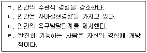
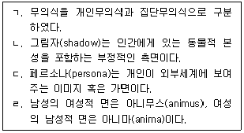

1과목: 인간행동과 사회환경
1. 인간발달에 관한 설명으로 옳지 않은 것은?
2. 생태체계이론의 유용성에 관한 설명으로 옳지 않은 것은?
2023-04-19 10:07
3. 인간발달이론과 사회복지실천에 관한 설명으로 옳지 않은 것은?
2023-04-19 10:08
4. 생태체계이론의 주요 개념에 관한 설명으로 옳은 것은?
5. 에릭슨(E. Erikson)의 이론으로 옳지 않은 것은?
6. 프로이트(S. Freud)의 정신분석이론에 관한 설명으로 옳은 것은?
7. 매슬로우(A. Maslow)의 이론으로 옳지 않은 것은?
8. 반두라(A. Bandura)의 사회학습이론의 주요 개념으로 옳지 않은 것은?
9. 영아기(0-2세)에 관한 설명으로 옳지 않은 것은?
2023-04-19 10:09
10. 중년기(40-64세)에 관한 설명으로 옳은 것은?
11. 유아기(3-6세)에 관한 설명으로 옳은 것은?
12. 로저스(C. Rogers)의 인본주의 이론에 관한 설명으로 옳은 것을 모두 고른 것은?

13. 융(C. Jung)의 이론으로 옳은 것을 모두 고른 것은?

14. 브론펜브레너(U. Bronfenbrenner)의 사회환경체계에 관한 설명으로 옳은 것은?
15. 집단에 관한 설명으로 옳은 것은?
16. 문화에 관한 설명으로 옳은 것은?